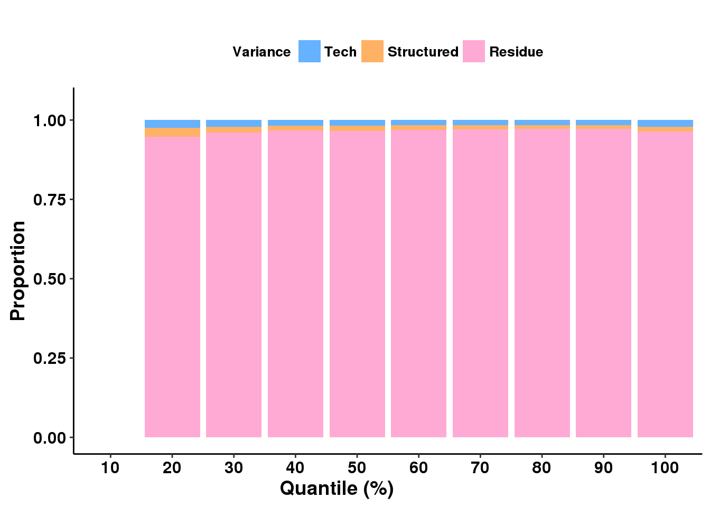
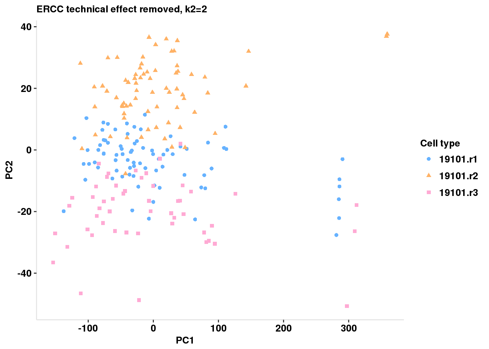
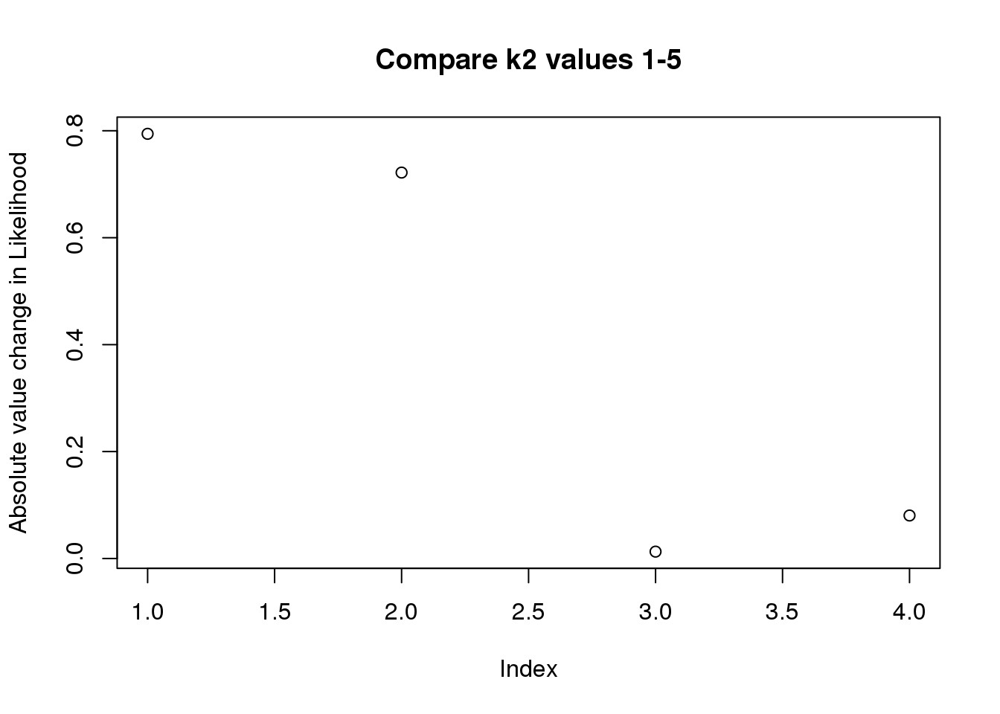
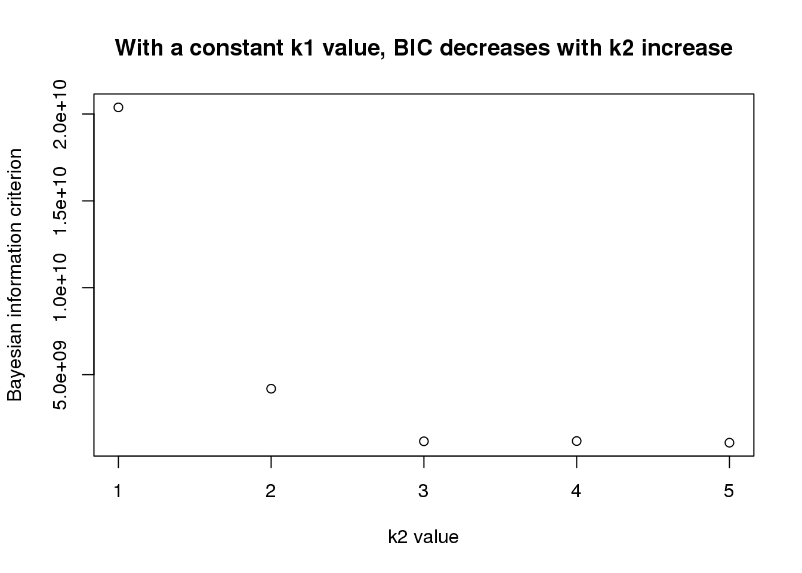
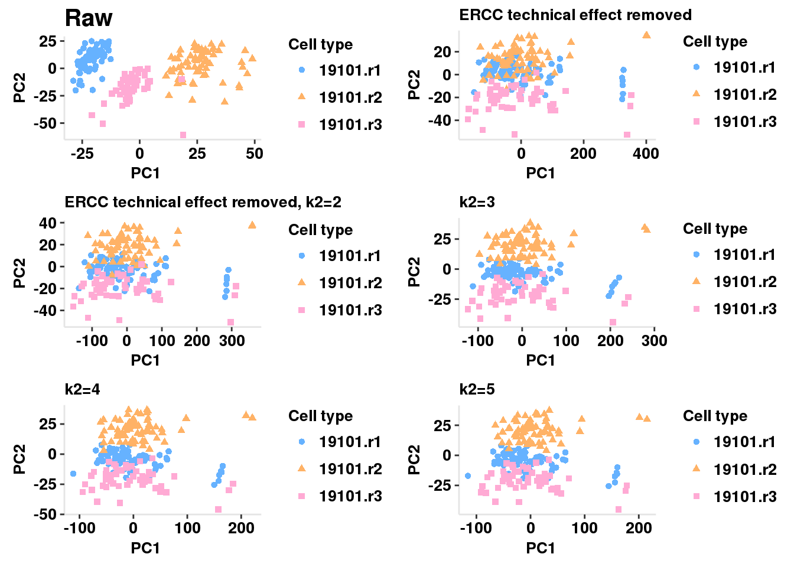
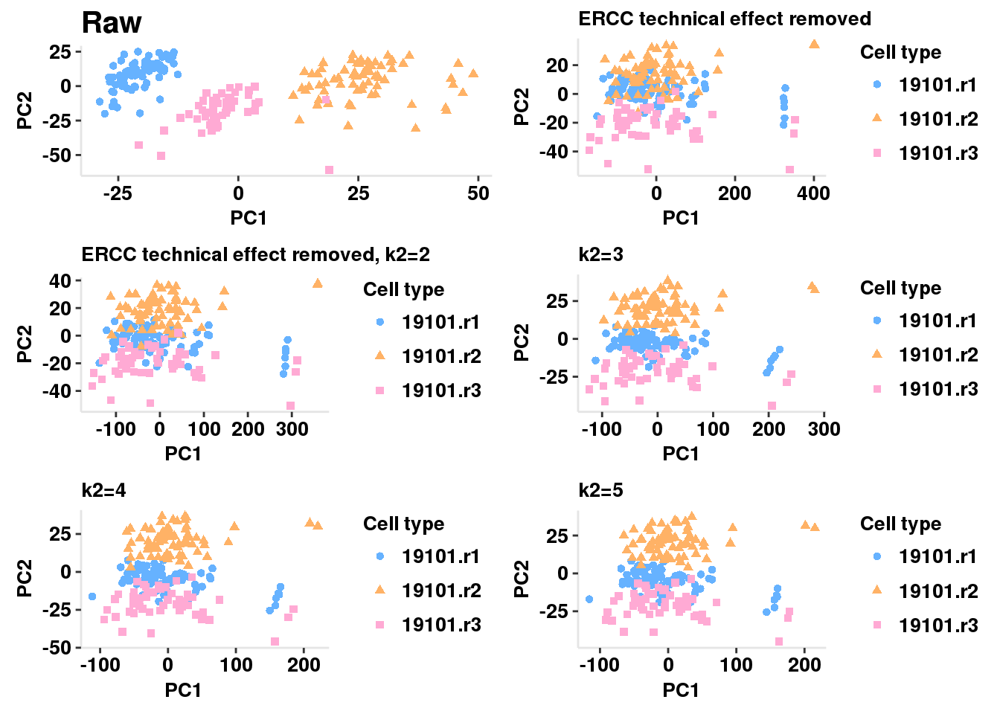
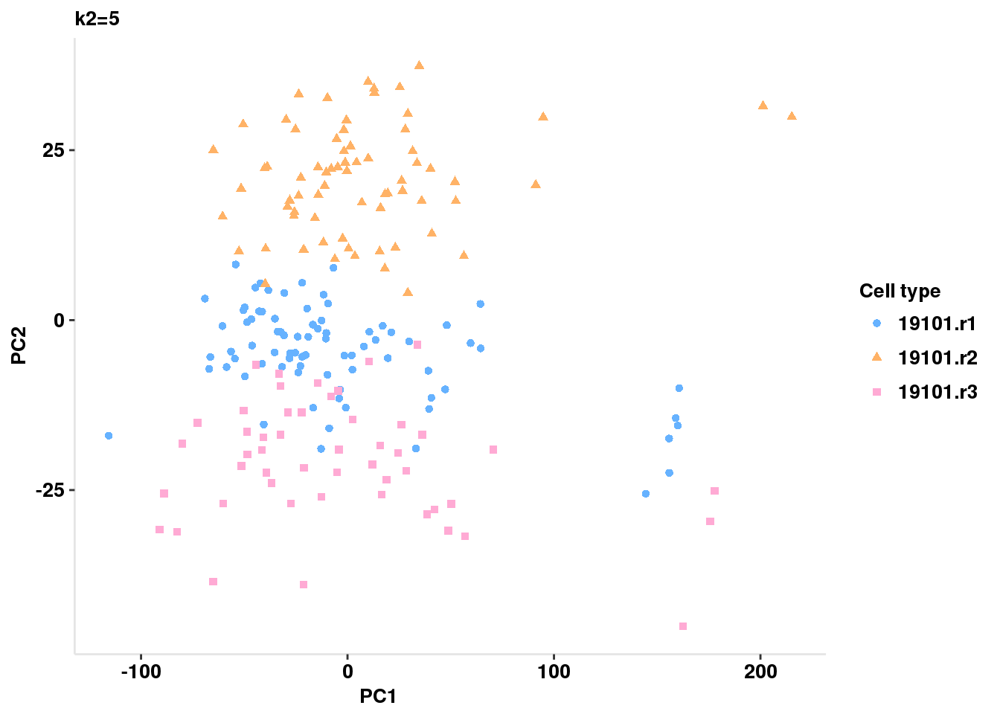

Last updated: 2017-03-02
Code version: 3ce427b
In this analysis I will use the scPLS method in the Citrus package to regress technical factor out of the single cell data. I will use filtered molecule counts for the first individual in the dataset.
library("Citrus")
library(reshape2)
library(ggplot2)
#devtools::install_github("kassambara/easyGgplot2")
library(easyGgplot2)
library(stringr)
library("cowplot")I will input the data that has been transpormed with 1 + cpm. The ERCC genes and target genes are in seperate datasets. I subset the data for onlt the first individual.
molecules_cpm_ERCC= read.table("../data/molecules-cpm-ercc.txt", header=TRUE, stringsAsFactors = FALSE)
molecules_cpm_ERCC_19101= molecules_cpm_ERCC[ ,grep("19101", colnames(molecules_cpm_ERCC) )]
molecules_cpm= read.table("../data/molecules-cpm.txt", header=TRUE, stringsAsFactors = FALSE)
molecules_cpm_19101= molecules_cpm[, grep("19101", colnames(molecules_cpm) )]Transpose datasets for method
molecules_cpm_ERCC_19101t= molecules_cpm_ERCC_19101 %>% t
molecules_cpm_ERCC_19101t[1:3,1:3] ERCC-00002 ERCC-00003 ERCC-00004
NA19101.r1.A02 17.34963 12.78952 15.39881
NA19101.r1.A03 16.96914 13.59557 15.26609
NA19101.r1.A04 17.20472 14.45713 15.50018dim(molecules_cpm_ERCC_19101t)[1] 201 48molecules_cpm_19101t = molecules_cpm_19101 %>% t
molecules_cpm_19101t[1:3, 1:3] ENSG00000237683 ENSG00000188976 ENSG00000187961
NA19101.r1.A02 1.868781 5.056857 1.868781
NA19101.r1.A03 1.868781 5.886246 4.129754
NA19101.r1.A04 1.868781 6.727420 1.868781dim(molecules_cpm_19101t)[1] 201 13058There are 48 ERCC genes and 13058 target genes.
I will run the scPLS algorithm using the ERCC genes as control and the ENSG genes as the target genes. Start with K values both equaling 1. I will work on optimization of this once I have the algorithm working.
scPLS_tech <- scPLS(molecules_cpm_19101t, molecules_cpm_ERCC_19101t, k1 = 1, k2 = 1, iter = 100, method = "EM", Chunk = TRUE, chunk.size = 500, center = TRUE)
save(scPLS_tech, file="../data/scPLS_tech.rda")load("../data/scPLS_tech.rda")summary(scPLS_tech) Length Class Mode
Factor 13058 -none- numeric
Loading 201 -none- numeric
Likelihood 1 -none- numeric
Z 201 -none- numeric
lambdaY 13058 -none- numeric
lambdaX 48 -none- numeric
psi_y 13058 -none- numeric
Method 1 -none- character
Adjusted 2624658 -none- numeric
VarianceSummary 6 data.frame list summary(scPLS_tech$Likelihood) Min. 1st Qu. Median Mean 3rd Qu. Max.
-1.019e+10 -1.019e+10 -1.019e+10 -1.019e+10 -1.019e+10 -1.019e+10 Var <- scPLS_tech$VarianceSummary
ConProp <- round(Var["ModelConfounding"]/Var["Model"], 3)
StructuredProp <- round(Var["ModelStructure"]/Var["Model"], 3)
PropTable <- data.frame(ConProp, StructuredProp, 1 - ConProp -
StructuredProp)
colnames(PropTable) <- c("Tech", "Structured", "Residue")
QuantileTable <- QuantileSummary(PropTable, quantiles = seq(0.1,
1, by = 0.1), rankingby = unlist(Var["Sample"]))
head(QuantileTable) Tech Structured Residue Quantile
1 NaN NaN NaN 10
2 0.02398777 0.02933486 0.9466774 20
3 0.02046136 0.01941239 0.9601262 30
4 0.01734124 0.01541393 0.9672448 40
5 0.01819018 0.01563880 0.9661710 50
6 0.01646366 0.01404514 0.9694912 60df <- reshape2::melt(QuantileTable, id.vars = "Quantile")
colnames(df)[3] <- "Proportion"
colnames(df)[2] <- "Variance"
ff <- ggplot2.barplot(data = df, xName = "Quantile", yName = "Proportion", groupName = "Variance", groupColors = c("#66B2FF", "#FFB266",
"#FFAAD4"), position = position_stack(), backgroundColor = "white", color = "black", xtitle = "Quantile (%)", ytitle = "Proportion", mainTitle = "", removePanelGrid = TRUE, removePanelBorder = TRUE, axisLine = c(0.5, "solid", "black"), ylim = c(0, 1.05), legendPosition = "top", legendTextFont = c(10, "bold", "black"))
ffWarning: Removed 3 rows containing missing values (position_stack).
celltypes <- str_split_fixed(row.names(molecules_cpm_19101t), pattern= ".[A-H]", n=3)[,2]
pcs <- prcomp(molecules_cpm_19101t, center = TRUE)
PC1 <- pcs$x[, 1]
PC2 <- pcs$x[, 2]
df <- data.frame(PC1, PC2, "raw", celltypes)
colnames(df) <- c("PC1", "PC2", "Method", "Type")
ff1 <- ggplot2.scatterplot(data = df, xName = "PC1", yName = "PC2", groupName = "Type", size = 5, backgroundColor = "white", groupColors = c("#66B2FF", "#FFB266", "#FFAAD4"), xtitle = "PC1", ytitle = "PC2", mainTitle = "Raw", removePanelGrid = TRUE, removePanelBorder = TRUE, setShapeByGroupName = TRUE, showLegend = FALSE, mainTitleFont = c(15, "bold", "black"), xtitleFont = c(10,"bold", "black"), ytitleFont = c(10, "bold", "black"), xTickLabelFont = c(10, "bold", "black"), yTickLabelFont = c(10, "bold", "black"))
pcs <- prcomp(scPLS_tech$Adjusted, center = TRUE)
PC1 <- pcs$x[, 1]
PC2 <- pcs$x[, 2]
df <- data.frame(PC1, PC2, "rm_ERCC", celltypes)
colnames(df) <- c("PC1", "PC2", "Method", "Type")
ff2 <- ggplot2.scatterplot(data = df, xName = "PC1", yName = "PC2",
groupName = "Type", size = 5, backgroundColor = "white", groupColors = c("#66B2FF", "#FFB266", "#FFAAD4"), xtitle = "PC1",
ytitle = "PC2", mainTitle = "ERCC technical effect removed", removePanelGrid = TRUE, removePanelBorder = TRUE, setShapeByGroupName = TRUE, showLegend = TRUE, mainTitleFont = c(10, "bold", "black"), xtitleFont = c(10,
"bold", "black"), ytitleFont = c(10, "bold", "black"), xTickLabelFont=c(10, "bold", "black"), yTickLabelFont= c(10, "bold", "black"), legendTitle= "Cell type", legendTitleFont= c(10, "bold", "black"), legendTextFont = c(10, "bold", "black") )plot_grid(ff1,ff2)I changed the chunk size to 500 to try to run the algorithm faster.
scPLS_tech.1.2 <- scPLS(molecules_cpm_19101t, molecules_cpm_ERCC_19101t, k1 = 1, k2 = 2, iter = 100, method = "EM", Chunk = TRUE, chunk.size = 500, center = TRUE)
#save(scPLS_tech.1.2, file="../data/scPLS_tech.1.2.rda")
scPLS_tech.2.1 <- scPLS(molecules_cpm_19101t, molecules_cpm_ERCC_19101t, k1 = 2, k2 = 1, iter = 100, method = "EM", Chunk = TRUE, chunk.size = 500, center = TRUE)
#save(scPLS_tech.2.1, file="../data/scPLS_tech.2.1.rda")
scPLS_tech.2.2 <- scPLS(molecules_cpm_19101t, molecules_cpm_ERCC_19101t, k1 = 2, k2 = 2, iter = 100, method = "EM", Chunk = TRUE, chunk.size = 500, center = TRUE)
#save(scPLS_tech.2.2, file="../data/scPLS_tech.2.2.rda")
scPLS_tech.2.3 <- scPLS(molecules_cpm_19101t, molecules_cpm_ERCC_19101t, k1 = 2, k2 = 3, iter = 100, method = "EM", Chunk = TRUE, chunk.size = 500, center = TRUE)
save(scPLS_tech.2.3, file="../data/scPLS_tech.2.3.rda")
scPLS_tech.3.2 <- scPLS(molecules_cpm_19101t, molecules_cpm_ERCC_19101t, k1 = 3, k2 = 2, iter = 100, method = "EM", Chunk = TRUE,chunk.size = 500, center = TRUE)
save(scPLS_tech.3.2, file="../data/scPLS_tech.3.2.rda")
scPLS_tech.3.3 <- scPLS(molecules_cpm_19101t, molecules_cpm_ERCC_19101t, k1 = 3, k2 = 3, iter = 100, method = "EM", Chunk = TRUE,chunk.size = 500, center = TRUE)
save(scPLS_tech.3.3, file="../data/scPLS_tech.3.3.rda")load("../data/scPLS_tech.1.2.rda")
load("../data/scPLS_tech.2.1.rda")
load("../data/scPLS_tech.2.2.rda")
load("../data/scPLS_tech.2.3.rda")
load("../data/scPLS_tech.3.2.rda")
load("../data/scPLS_tech.3.3.rda")Create dataframe with likelihoods
scPLS.1.1= c(1,1,mean(summary(scPLS_tech$Likelihood)))
scPLS.1.2 = c(1,2,mean(summary(scPLS_tech.1.2$Likelihood)))
scPLS.2.1 = c(2,1,mean(summary(scPLS_tech.2.1$Likelihood)))
scPLS.2.2 = c(2,2,mean(summary(scPLS_tech.2.2$Likelihood)))
scPLS.2.3 = c(2,3,mean(summary(scPLS_tech.2.3$Likelihood)))
scPLS.3.2 = c(3,2,mean(summary(scPLS_tech.3.2$Likelihood)))
scPLS.3.3 = c(3,3,mean(summary(scPLS_tech.3.3$Likelihood)))
vary_k = rbind(scPLS.1.1, scPLS.1.2, scPLS.2.1, scPLS.2.2, scPLS.2.3, scPLS.3.2, scPLS.3.2)
colnames(vary_k) = c("k1", "k2", "likelihood")
vary_k =data.frame(vary_k)Warning in data.row.names(row.names, rowsi, i): some row.names duplicated:
7 --> row.names NOT usedvary_k k1 k2 likelihood
1 1 1 -1.019e+10
2 1 2 -2.096e+09
3 2 1 -8.921e+09
4 2 2 -1.322e+09
5 2 3 -1.351e+09
6 3 2 -6.026e+08
7 3 2 -6.026e+08ggplot2.scatterplot(data=vary_k, xName = "k1", yName = "k2", mapping=aes(size =("likelihood")), backgroundColor="white")
compare to previous 1 (one-other)/one
run: (1,3), (1,4), (1,5)
pcs <- prcomp(scPLS_tech.1.2$Adjusted, center = TRUE)
PC1 <- pcs$x[, 1]
PC2 <- pcs$x[, 2]
df <- data.frame(PC1, PC2, "rm_ERCC", celltypes)
colnames(df) <- c("PC1", "PC2", "Method", "Type")
ff3 <- ggplot2.scatterplot(data = df, xName = "PC1", yName = "PC2",
groupName = "Type", size = 5, backgroundColor = "white", groupColors = c("#66B2FF", "#FFB266", "#FFAAD4"), xtitle = "PC1",
ytitle = "PC2", mainTitle = "ERCC technical effect removed, k2=2", removePanelGrid = TRUE, removePanelBorder = TRUE, setShapeByGroupName = TRUE, showLegend = TRUE, mainTitleFont = c(10, "bold", "black"), xtitleFont = c(10,
"bold", "black"), ytitleFont = c(10, "bold", "black"), xTickLabelFont=c(10, "bold", "black"), yTickLabelFont= c(10, "bold", "black"), legendTitle= "Cell type", legendTitleFont= c(10, "bold", "black"), legendTextFont = c(10, "bold", "black") )
ff3
scPLS_tech.1.3 <- scPLS(molecules_cpm_19101t, molecules_cpm_ERCC_19101t, k1 = 1, k2 = 3, iter = 100, method = "EM", Chunk = TRUE, chunk.size = 500, center = TRUE)
save(scPLS_tech.1.3, file="../data/scPLS_tech.1.3.rda")
scPLS_tech.1.4 <- scPLS(molecules_cpm_19101t, molecules_cpm_ERCC_19101t, k1 = 1, k2 = 4, iter = 100, method = "EM", Chunk = TRUE, chunk.size = 500, center = TRUE)
save(scPLS_tech.1.4, file="../data/scPLS_tech.1.4.rda")
scPLS_tech.1.5 <- scPLS(molecules_cpm_19101t, molecules_cpm_ERCC_19101t, k1 = 1, k2 = 5, iter = 100, method = "EM", Chunk = TRUE, chunk.size = 500, center = TRUE)
save(scPLS_tech.1.5, file="../data/scPLS_tech.1.5.rda")load("../data/scPLS_tech.1.3.rda")
load("../data/scPLS_tech.1.4.rda")
load("../data/scPLS_tech.1.5.rda")scPLS.1.1= c(1,1,mean(summary(scPLS_tech$Likelihood)))
scPLS.1.2 = c(1,2,mean(summary(scPLS_tech.1.2$Likelihood)))
scPLS.1.3 = c(1,3,mean(summary(scPLS_tech.1.3$Likelihood)))
scPLS.1.4 = c(1,4,mean(summary(scPLS_tech.1.4$Likelihood)))
scPLS.1.5 = c(1,5,mean(summary(scPLS_tech.1.5$Likelihood)))
scPLS.1.1.5= rbind(scPLS.1.1,scPLS.1.2,scPLS.1.3,scPLS.1.4,scPLS.1.5)
colnames(scPLS.1.1.5)=c("k1", "k2", "Likelihood")
scPLS.1.1.5 k1 k2 Likelihood
scPLS.1.1 1 1 -1.019e+10
scPLS.1.2 1 2 -2.096e+09
scPLS.1.3 1 3 -5.831e+08
scPLS.1.4 1 4 -5.906e+08
scPLS.1.5 1 5 -5.431e+08change1=(mean(summary(scPLS_tech.1.2$Likelihood))- mean(summary(scPLS_tech$Likelihood)))/mean(summary(scPLS_tech$Likelihood))
change2=(mean(summary(scPLS_tech.1.3$Likelihood))- mean(summary(scPLS_tech.1.2$Likelihood)))/mean(summary(scPLS_tech.1.2$Likelihood))
change3=(mean(summary(scPLS_tech.1.4$Likelihood))- mean(summary(scPLS_tech.1.3$Likelihood)))/mean(summary(scPLS_tech.1.3$Likelihood))
change4=(mean(summary(scPLS_tech.1.5$Likelihood))- mean(summary(scPLS_tech.1.4$Likelihood)))/mean(summary(scPLS_tech.1.4$Likelihood))
L_change= c(abs(change1), abs(change2), abs(change3), abs(change4))
plot(L_change, ylab="Absolute value change in Likelihood", main="Compare k2 values 1-5")
Biggest improvement in likelihood is between k2=1 and k2=2.
DON’T USE THIS ANALYSIS FOR MODEL SELECTION, USE THE MIN BIC
BIC= ln(n)k-2ln(L)
#BIC = ln(number of cells) * (k1 + k2) - 2 *(scPLS output of likelihood)
ncells=201
Bic1= log(ncells) * (2) - (2 * (mean(summary(scPLS_tech$Likelihood))))
Bic2= log(ncells) * (3) - (2 * (mean(summary(scPLS_tech.1.2$Likelihood))))
Bic3= log(ncells) * (4) - (2 * (mean(summary(scPLS_tech.1.3$Likelihood))))
Bic4= log(ncells) * (5) - (2 * (mean(summary(scPLS_tech.1.4$Likelihood))))
Bic5= log(ncells) * (6) - (2 * (mean(summary(scPLS_tech.1.5$Likelihood))))
Bic_likelihood= c(Bic1,Bic2, Bic3, Bic4, Bic5)
plot(Bic_likelihood, ylab="Bayesian information criterion", xlab="k2 value", main="With a constant k1 value, BIC decreases with k2 increase")
which.min(Bic_likelihood)[1] 5The smallest BIC is achieved when k2=5.
#ff1 is raw
#k2=1 : ff2
#k2=2: ff3
pcs <- prcomp(scPLS_tech.1.3$Adjusted, center = TRUE)
PC1 <- pcs$x[, 1]
PC2 <- pcs$x[, 2]
df <- data.frame(PC1, PC2, "rm_ERCC", celltypes)
colnames(df) <- c("PC1", "PC2", "Method", "Type")
ff4 <- ggplot2.scatterplot(data = df, xName = "PC1", yName = "PC2",
groupName = "Type", size = 5, backgroundColor = "white", groupColors = c("#66B2FF", "#FFB266", "#FFAAD4"), xtitle = "PC1",
ytitle = "PC2", mainTitle = "k2=3", removePanelGrid = TRUE, removePanelBorder = TRUE, setShapeByGroupName = TRUE, showLegend = TRUE, mainTitleFont = c(10, "bold", "black"), xtitleFont = c(10,
"bold", "black"), ytitleFont = c(10, "bold", "black"), xTickLabelFont=c(10, "bold", "black"), yTickLabelFont= c(10, "bold", "black"), legendTitle= "Cell type", legendTitleFont= c(10, "bold", "black"), legendTextFont = c(10, "bold", "black") )pcs <- prcomp(scPLS_tech.1.4$Adjusted, center = TRUE)
PC1 <- pcs$x[, 1]
PC2 <- pcs$x[, 2]
df <- data.frame(PC1, PC2, "rm_ERCC", celltypes)
colnames(df) <- c("PC1", "PC2", "Method", "Type")
ff5 <- ggplot2.scatterplot(data = df, xName = "PC1", yName = "PC2",
groupName = "Type", size = 5, backgroundColor = "white", groupColors = c("#66B2FF", "#FFB266", "#FFAAD4"), xtitle = "PC1",
ytitle = "PC2", mainTitle = "k2=4", removePanelGrid = TRUE, removePanelBorder = TRUE, setShapeByGroupName = TRUE, showLegend = TRUE, mainTitleFont = c(10, "bold", "black"), xtitleFont = c(10,
"bold", "black"), ytitleFont = c(10, "bold", "black"), xTickLabelFont=c(10, "bold", "black"), yTickLabelFont= c(10, "bold", "black"), legendTitle= "Cell type", legendTitleFont= c(10, "bold", "black"), legendTextFont = c(10, "bold", "black") )pcs <- prcomp(scPLS_tech.1.5$Adjusted, center = TRUE)
PC1 <- pcs$x[, 1]
PC2 <- pcs$x[, 2]
df <- data.frame(PC1, PC2, "rm_ERCC", celltypes)
colnames(df) <- c("PC1", "PC2", "Method", "Type")
ff6 <- ggplot2.scatterplot(data = df, xName = "PC1", yName = "PC2",
groupName = "Type", size = 5, backgroundColor = "white", groupColors = c("#66B2FF", "#FFB266", "#FFAAD4"), xtitle = "PC1",
ytitle = "PC2", mainTitle = "k2=5", removePanelGrid = TRUE, removePanelBorder = TRUE, setShapeByGroupName = TRUE, showLegend = TRUE, mainTitleFont = c(10, "bold", "black"), xtitleFont = c(10,
"bold", "black"), ytitleFont = c(10, "bold", "black"), xTickLabelFont=c(10, "bold", "black"), yTickLabelFont= c(10, "bold", "black"), legendTitle= "Cell type", legendTitleFont= c(10, "bold", "black"), legendTextFont = c(10, "bold", "black") )plot_grid(ff1, ff2, ff3, ff4, ff5, ff6, nrow = 3 )
scPLS_tech.2.4 <- scPLS(molecules_cpm_19101t, molecules_cpm_ERCC_19101t, k1 = 2, k2 = 4, iter = 100, method = "EM", Chunk = TRUE,chunk.size = 500, center = TRUE)
save(scPLS_tech.2.4, file="../data/scPLS_tech.2.4.rda")
scPLS_tech.2.5 <- scPLS(molecules_cpm_19101t, molecules_cpm_ERCC_19101t, k1 = 2, k2 = 5, iter = 100, method = "EM", Chunk = TRUE,chunk.size = 500, center = TRUE)
save(scPLS_tech.2.5, file="../data/scPLS_tech.2.5.rda")load("../data/scPLS_tech.2.1.rda")
load("../data/scPLS_tech.2.2.rda")
load("../data/scPLS_tech.2.3.rda")
load("../data/scPLS_tech.2.4.rda")
load("../data/scPLS_tech.2.5.rda")Bic2.1= log(ncells) * (3) - (2 * (mean(summary(scPLS_tech.2.1$Likelihood))))
Bic2.2= log(ncells) * (4) - (2 * (mean(summary(scPLS_tech.2.2$Likelihood))))
Bic2.3= log(ncells) * (5) - (2 * (mean(summary(scPLS_tech.2.3$Likelihood))))
Bic2.4= log(ncells) * (6) - (2 * (mean(summary(scPLS_tech.2.4$Likelihood))))
Bic2.5= log(ncells) * (7) - (2 * (mean(summary(scPLS_tech.2.5$Likelihood))))x1.1= c(1,1, Bic1/(10^9))
x1.2= c(1,2,Bic2/(10^9))
x1.3= c(1,3,Bic3/(10^9))
x1.4= c(1,4,Bic4/(10^9))
x1.5= c(1,5,Bic5/(10^9))
x2.1= c(2,1, Bic2.1/(10^9))
x2.2= c(2,2,Bic2.2/(10^9))
x2.3= c(2,3,Bic2.3/(10^9))
x2.4= c(2,4,Bic2.4/(10^9))
x2.5= c(2,5,Bic2.5/(10^9))
BIC_m= rbind(x1.1, x1.2,x1.3,x1.4,x1.5, x2.1, x2.2, x2.3, x2.4, x2.5)
colnames(BIC_m)=c("k1", "k2", "BIC_prop")
BIC_df=data.frame(BIC_m)
BIC_df k1 k2 BIC_prop
x1.1 1 1 20.3800
x1.2 1 2 4.1920
x1.3 1 3 1.1662
x1.4 1 4 1.1812
x1.5 1 5 1.0862
x2.1 2 1 17.8420
x2.2 2 2 2.6440
x2.3 2 3 2.7020
x2.4 2 4 1.3724
x2.5 2 5 1.9892ggplot(BIC_df, aes(x=k1, y=k2)) +
geom_point(aes(size=BIC_prop)) +
ggtitle("BIC values divided by 10^9 plotted by K values") +
scale_x_discrete("Number of Biological factors", limits=c("1","2")) +
ylab(" Number of Technical factors ") 
##NEED TO ADD LABELS This site was created with R Markdown